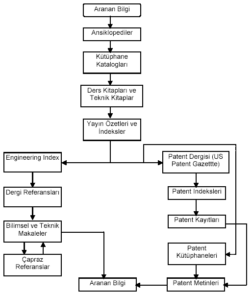

|
Sözlük
ve Ansiklopediler
Gerek Türkçe'de, gerek yabancý dillerde, gerekse Türkçe ile
çeþitli yabancý diller arasýnda çeþitli sözlükler
hazýrlanmýþ ve yayýnlanmýþtýr. Genel sözlükler yanýnda teknik
terimler sözlükleri meslekî olarak en yararlý olanlarýdýr.
Bazý dar ve çok yeni araþtýrma alanlarýnda yeni icat edilen
terimlerin karþýlýklarýný bulmak
zordur. Bu durumda bu tür terim ve kelimelerin tanýmlarý onlarý
içeren kitap ve makalelerden temin
edilmeye çalýþýlýr.
ÝTÜ
Kütüphanesi Ýnternet Sitesinden eriþilebilen elektronik sözlükler:
- Türkçe
Sözlük
- Cambridge
International Dictionary of English
- Webster's
Revised Unabridged Dictionary
- Wordsmyth
English Dictionary-Thesaurus

Þekil 2. Bilgi arama akýþ þemasý
Tablo 2: ÝTÜ Kütüphane Hizmetleri (www.library.itu.edu.tr)
Online
Katalog
Katalog Tarama
Ders Adýna Göre Ders Kitabý Tarama |
Kullanýcý
Hizmetleri
Kullanýcý Kayýtlarý
PIN ve Barkod Ýþlemleri
Ýstek ve Öneriler |
Elektronik
Veritabanlarý
Online ve CD-ROM Veritabanlarý
Elektronik Dergiler ve Gazeteler
TSE Standartlarý Arama |
Linkler
Kütüphane ve Bilgi Merkezleri
Z39.50 ile Eriþilebilen Kütüphaneler
ÝTÜ Ana
Sayfa |
Yayýn
Saðlama Hizmetleri
ÝTÜ Kütüphaneleri Ýçin Kitap Talebi
Yurtiçi ve Dýþýndan Kitap-Makale Talebi
Yeni Alýnan Kitaplar
ÝTÜ Kütüphaneleri Süreli Yayýn Listesi |
Diðer
Yararlanma Koþullarý
Projeler ve Duyurular
Personel Listesi ve Þube Kütüphaneleri |
El
Kitaplarý
Bazen genel olarak bir disiplinin bütününü, bazen
de belirli bir kýsmýný içerdiði gözlenen el kitaplarý konuyla
ilgili bütün bilgilerin bir araya toplanarak özetlendiði kitaplardýr.
Makine mühendisliði konularý üzerine yazýlmýþ ünlü el kitaplarýnýn
bir listesi aþaðýda verilmiþtir.
- Mark's
Standart Handbook for Mecjanical Engineering, 10th Ed. McGraw-Hill,
NY 1996.
- The
Mechanical Engineering Handbook, CRC Press, Boca Raton FL
1997.
- Mechanical
Engineer's Handbook, 2nd Ed., Wiley, NY 1998.
- Handbook
of Experimental Mechanics, Wiley, NY 1993.
- Pump
Handbook, 4th Ed., McGraw-Hill, NY 1996.
- Standart
Handbook of Fastening and Joining, 3rd Ed. McGraw-Hill,
NY 1997.
- Mechanical
Engineer's Reference Book, 12th Ed., Butterworth-H., London
1994.
- Roark's
Formulas for Stress and Starin, 6th Ed., McGraw-Hill, NY
1989.
- Gieck's
Handbook of Engineering Formulas, 6th Ed., McGraw-Hill,
NY 1990.
Ders
Kitaplarý
Ders kitaplarý sektörü hergün yeni kitaplarýn veya iyileþtirilmiþ
yeni baskýlarýn ortaya çýktýðý canlý bir sektördür. Özellikle
Ýngilizce ders kitaplarýnýn ve kaynak kitaplarýn izlenebilmesi
için büyük yayýncýlarýn web siteleri yanýnda, internet üzerinde
satýþ yapan Amazon.com gibi kuruluþlarýn "Books in Print"
kýsýmlarýna bakmalýdýr.
Ýndeks
ve Yayýn Özeti Servisleri
Ýndeks Servisleri süreli yayýnlar ve içerikleri hakkýnda güncel
bilgileri saðlayan temel kaynaklardýr. Bazý indeks servisleri,
istendiðinde yayýnýn tam metnini de temin etmektedirler. Ýndeks
servisleri, makale vb. yayýnlarýn, yazarlarý, baþlýðý, anahtar
kelimeleri ve bibliyografik bilgileri içermekte, yayýn özeti
servisleri ise ek olarak makale içeriklerinin özetlerini de
sunmaktadýr. Ýndeks ve yayýn özeti servisleri aðýrlýklý olarak
süreli yayýnlarda çýkan makaleleri ihtiva etmekle beraber,
konferans, sempozyum ve kongre bildirileri ve kitaplarý da
içerenler vardýr.
ÝTÜ
Kütüphanesi Internet Sayfasýnda Bulunan Online Veri Tabanlarý:
- Web
of Science 1994-2001 (Science Citation Index, Social Science
Citation Index ve Arts & Humanities Index veritabanlarýný
içerir.)
- Engineering
Village 2 (Compendex veritabanýný içerir.)
- ABI
INFORM GLOBAL
- MathSciNet
- Table
of Contents Veritabaný
- Proquest
Digital Dissertation
- The
New Grove Dictionary of Music & Musicians 2nd edition
on the web
- Web
of Science ISI'ýn kendi sunucusundan tarama için deneme
eriþimi.
- Wiley
InterScience OnlineBooks servisi
- Proquest
Inspec
- Chadwick-Healy
veritabanlarýndan IIMP(Index for Music Periodicals) ve 3600
dergiyi tam metin olarak içeren PCIFT
- Periodical
Contents Index-Full Text
- Historical
Abstracts : 1450'den günümüze dünya tarihi (Amerikan tarihi
hariç)
- America
: History and Life : Amerikan ve Kanada tarihi konulu veri
tabaný, ilgili makalelerin özetlerini içerir.
- Birleþmiþ
Milletler Dokümantasyon Merkezi
- CSSinfo
Online Standards Access
ÝTÜ
Kütüphanesi Internet Sayfasýnda Bulunan CD-ROM Veritabanlarý:
- ABI
/ Inform
- Applied
Science & Technical Index
- Architectural
Publications Index
- Arts
& Humanities Citation Index
- Chemical
Abstracts
- Compendex
Plus
- Dissertation
Abstracts
- Econlit
- Food
Science & Technology Abstracts
- Georef
- Iconda
- Inis
- ISC
Bulltein
- Journal
Citation Reports
- Science
Citation Index
- Social
Science Citation Index
Çeviri
Hizmetleri
Ülkemizde yabancý dillerden Türkçe'ye çeviri amacýyla kurulmuþ
resmî bir daire veya kuruluþ yoktur. Gerek duyulduðunda çeviri
hizmetleri çok sayýda özel çeviri bürolarý aracýlýðýyla yürütülmektedir.
Fakat bu kuruluþlarda çalýþan çevirmen veya Mütercim-Tercüman
olarak anýlan kiþiler çoðunlukla ilgili yabancý dili genel
olarak iyi bilmekle beraber, teknik konular söz konusu olduðunda
terminolojiye hakim olamadýklarýndan, ortaya çýkan çeviriler
çoðu zaman baþarýlý olmamaktadýr. Bu yüzden, teknik çevirilerin
ilgili dili iyi bilen mühendisler tarafýndan yapýlmasý gerekmektedir.
Yabancý
dillerden Türkçe'ye çeviri amacýyla bazý bilgisayar programlarý
da yazýlmýþtýr ve piyasada mevcuttur. Yalnýz bu programlar,
dillerin yapýlarýndaki büyük farklýlýklar nedeniyle çok baþarýlý
deðildir. Anadilini ve yabancý dili iyi seviyeden bilen bir
kiþi günde ortalama beþ sayfa çeviri yapabilmektedir. Eðer
çeviri önce bilgisayar programýnca yapýlýp, daha sonra kiþi
tarafýndan tashih yoluna gidilirse, bu sayý günde ortalama
on beþ sayfaya çýkabilmektedir.
Tablo
3: ÝTÜ Kütüphanesi internet sitesinden (www.library.itu.edu.tr)
eriþilebilen elektronik dergiler ve gazeteler
- AIP
- American
Association of Physics Teachers
- American
Chemical Society
- American
Institute of Physics
- American
Mathematical Society
- Asce
- Asme
- Birkhauser
Verlag
- Blackwell
Publishers Inc.
- Blackwell
Science Ltd.
- Cambridge
University Press
- D-Lib
Forum
- DVG
- ECS
- EDP
Sciences
- Elsevier
Science
|
- Geological
Society Publishing House
- Institution
of Mining and Metallurgy
- IOP
- Kluwer
- Kluwer
Academic Publishers
- MCB
Univ. Press Ltd.
- MCB
University Press Ltd.
- MIT
Press journals-Massachusetts Institute
- Mineralogical
Society
- Multi
Science Pub. Co Ltd.
- Munksgaard
- Oxford
University Press
- Portland
Press Ltd-Miss Faye Steady
- Professional
Engineering Pub.
- Royal
Society
- Royal
Society of Chemistry
|
- Sage
Publications Inc.
- Sage
Publications Ltd.
- SIAM
- Springer
- Springer
Kundenservice
- Springer
Verlag
- Swets
- Swets
& Zeitlinger Publishers
- Taylor
& Francis Ltd.
- Taylor&Francis
Ltd.
- The
American Physical Society
- Tübitak
- University
of Chicago Press
- Wiley
- World
Scientific Pub. Co.
|
Kataloglar,
Broþürler ve Ýþ Dünyasý Bilgileri
Tedarikçi firmalardan temin edilebilecek hammaddeler ve makine
parçalarý hakkýnda en güncel ve saðlýklý bilgiler firmalarca
yayýmlanan kataloglar, broþürler, el kitaplarý veya bunlarýn
bir arada bulunduðu kompakt disklerdir. Bazý firmalar ürün
kataloglarýný ve broþür bilgilerini internetteki web sitelerinde
de müþterilerinin hizmetine sunmaktadýr. Hatta bazý kompakt
diskler ve web siteleri ürün seçiminde yardýmcý olmak üzere
"ürün seçme sihirbazý" denilen programlarý da ücretsiz olarak
saðlamaktadýrlar.
Belli
bir hammaddeyi veya makine parçasýný üreten firmalarýn bir
listesini oluþturabilmek ilk yapýlacak iþtir. Bu konularda
en büyük yardýmcýlardan biri ihtisas fuarlarý olmakla beraber,
bu tür fuarlar yýlýn belli zamanlarýnda açýldýðý için fuar
zamanlarýný beklemek her zaman mümkün olmayabilir. Amerika
Birleþik Devletleri'nde yayýmlanan "Thomas Registrar of American
Manufacturers" faaliyet alanlarýna ve yerlerine göre firmalarla
ilgili eriþim bilgilerinin derlendiði en ünlü kaynaklardan
birisidir. Ülkemizde bu tür dokümanlarý, Ýllerin Sanayi ve
Ticaret Odalarý, Odalar ve Borsalar Birliði ve çeþitli sektörel
dernek ve kuruluþlar yayýmlamaktadýr.
Kamu
Bilgi Kaynaklarý ve Arþivleri
Türkiye'deki
kamu bilgi kaynaklarýnýn en ünlüsü, yasa, tüzük, yönetmelik,
genelge ve üst düzey personel atamalarýnýn yayýnlandýðý Resmî
Gazete'dir. Resmî Gazete'nin yayýn ve daðýtýmýndan sorumlu
Baþbakanlýk Basýn Yayýn Enformasyon Genel Müdürlüðü, daha
pek çok dergi, broþür ve dokümanýn basýmý ve daðýtýmýný yürütür.
Son yýllarda hemen hemen bütün kamu kurum ve kuruluþlarý internet
aracýlýðýyla bilgi saðlama ve elde etme yolunu kullanmaya
baþlamýþlardýr. Bunlardan makine mühendisliði ile ilgili bilgilerin
bulunduðu bazýlarýnýn internet linkleri Tablo 4'te verilmiþtir:
Tablo
4: Kamu bilgi kaynaklarý
|